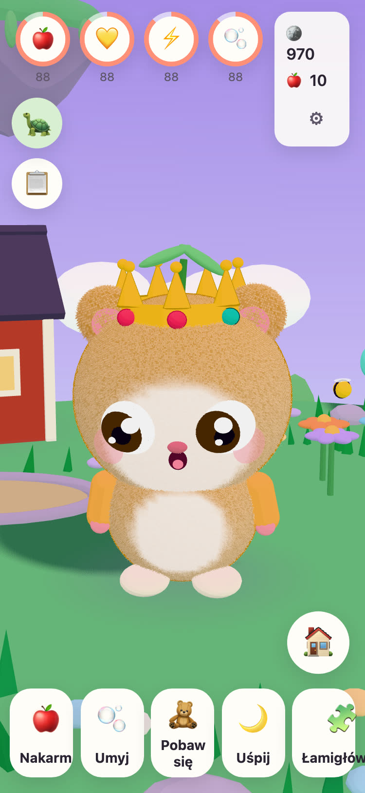
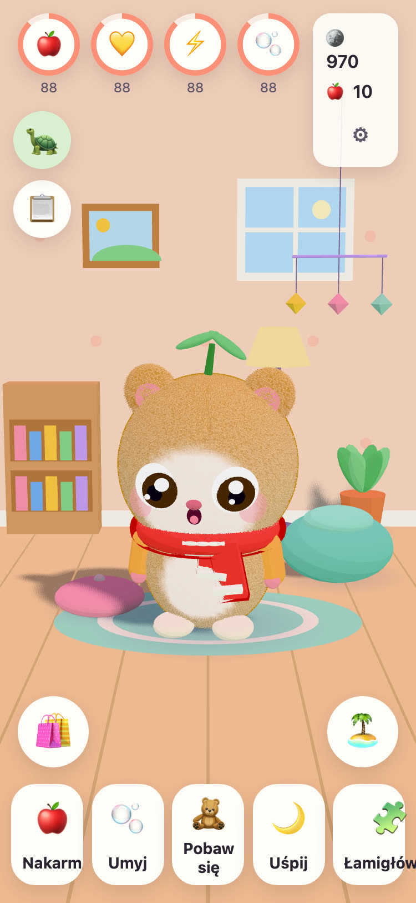
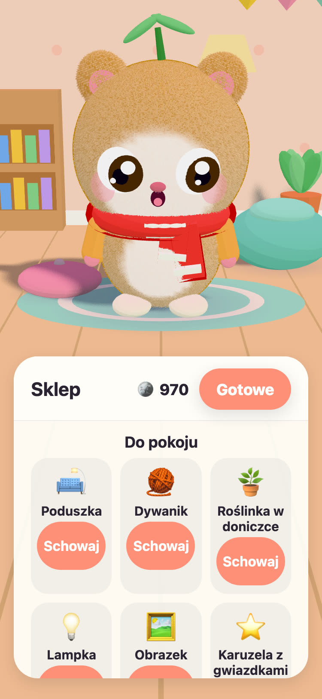
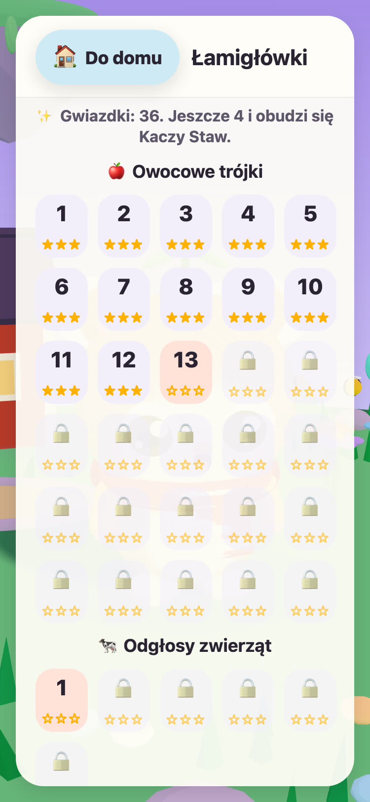

JUNOLittle Worlds
Wykluj Juno, opiekuj się nim i rozwiązuj łagodne łamigłówki, które budzą latającą wyspę. Spokojna gra dla dzieci w wieku od 6 do 10 lat, na iPhone’a i iPada.
Cześć! Znalazłem trzy ciepłe jajka. Które jest twoje?
- Bez reklam
- Bez śledzenia
- Bez konta
- Bez liczników czasu i presji




Własny mały przyjaciel
Dziadek Tintin, stary żółw, który opiekuje się Łąkową Wyspą, znalazł trzy ciepłe jajka. Twoje dziecko wybiera jedno i nadaje imię temu, co się wykluje. Od tej chwili Juno należy do niego: można go karmić, myć, bawić się z nim i kłaść na drzemkę.
-
Wybierz jajko
Trzy ciepłe jajka, trzy kolory. Twoje dziecko wybiera jedno i patrzy, jak się wykluwa.
-
Nadaj imię, pokochaj
Jedzenie, kąpiel, zabawa i drzemka. Juno pokazuje, jak się czuje, i rośnie razem z ich przyjaźnią.
-
Obudź wyspę
Każda gwiazdka z łamigłówek przywraca światło Łąkowej Wyspie, aż kwiaty, pszczoły i kaczki znów będą w domu.
Karmienie, kąpiel, zabawa, drzemka
Różne jedzenie i zabawki, bańki w kąpieli i Juno, który pokazuje, jak się czuje. Potrzeby spadają powoli i nigdy do zera, więc Juno nigdy nie przepada.
57 łagodnych łamigłówek
Owocowe trójki, Ogród Pamięci oraz Odgłosy zwierząt i pojazdów z prawdziwymi nagraniami. Gwiazdki zależą od ruchów, nigdy od czasu, a ponowna próba jest zawsze darmowa.
Wyspa, która się budzi
Ogród Kwiatowy rozkwita i przylatują pszczoły, Kaczy Staw napełnia się wodą i kaczkami, a nasiona wyrastają na jabłka i truskawki na grządkach.
Przytulny pokój do urządzenia
Za monety z łamigłówek i codziennych zadań można kupić ozdoby do pokoju Juno i stroje do noszenia. Nic w sklepie za monety nie kosztuje prawdziwych pieniędzy.
Czytanie na głos
Dziadek Tintin czyta na głos każde zdanie swoim ciepłym głosem, dla dzieci, które jeszcze nie umieją czytać. Dotknij go, aby usłyszeć je jeszcze raz.
Strefa rodzica
Za blokadą rodzicielską: język, czytanie na głos, dźwięki, pora snu i łagodne przypomnienie o przerwie. W porze snu Juno śpi, a łamigłówki czekają do rana.
Mówi w 21 językach
Dziadek Tintin mówi do Twojego dziecka w jego własnym języku. Wybierz język w Strefie rodzica albo pozwól grze używać języka urządzenia.
English Svenska Dansk Norsk Suomi Deutsch Nederlands Français Español Italiano Português (Brasil) Polski Русский Ελληνικά Türkçe Bahasa Melayu Kiswahili हिन्दी 日本語 한국어 简体中文
Stworzone przez dziadka
JUNO powstało w Szwecji, stworzone przez dziadka dla wnuczki: to gra, przy której z radością patrzyłby, jak wnuczka się bawi. Żółw z gry, Dziadek Tintin, to on sam.
Dlatego zasady są proste. Nic, co wywiera presję, nic, co oszukuje, i nic, co zbiera jakiekolwiek informacje o Twoim dziecku.
Za darmo, bez reklam
JUNO można pobrać za darmo; nie ma w nim reklam, śledzenia ani konta. Wszystko, co robi Twoje dziecko, zostaje na Twoim urządzeniu. Zobacz stronę o prywatności.
Dorosły może kupić JUNO Plus lub Pakiet Zimowy w Strefie rodzica, za blokadą rodzicielską. Oba to zakupy jednorazowe, które można przywrócić i udostępnić rodzinie.